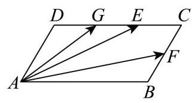
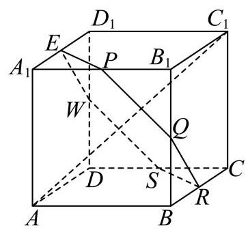
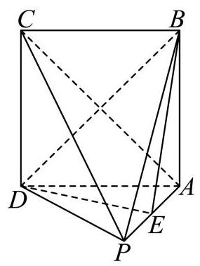

填空题
按本区原卷题号顺序排列。
宝山 · 第1题 ★☆☆☆☆ · 教师预估
已知集合 A={0,3},B={0,4} ，则 A∪B= ___.
考点：有限集合并集。
难度依据：有限集合并集
展开答案与解析
宝山 · 第2题 ★☆☆☆☆ · 教师预估
已知 cosa=31 ，则 cos2a= ___.
考点：二倍角余弦直接求值。
难度依据：二倍角余弦直接求值
展开答案与解析
宝山 · 第3题 ★☆☆☆☆ · 教师预估
已知 i 是虚数单位，且复数 z 满足 (1+i)z=2 ，则 ∣z∣= ___.
考点：复数除法及模的运算。
难度依据：复数除法及模的运算
展开答案与解析
宝山 · 第4题 ★☆☆☆☆ · 教师预估
若 n=(1,2) 是直线 l:ax+y−1=0 的一个法向量，则实数 a 的值为___.
考点：直线法向量与平行坐标比例；直线一般式及法向量。
难度依据：直线法向量与平行坐标比例；直线一般式及法向量
展开答案与解析
宝山 · 第5题 ★☆☆☆☆ · 教师预估
将边长为 2 的正方形绕其一边旋转一周，所得几何体的体积为___.
考点：正方形旋转所得圆柱体积。
难度依据：正方形旋转所得圆柱体积
展开答案与解析
宝山 · 第6题 ★☆☆☆☆ · 教师预估
已知随机变量 X∼N(2,σ2) ，且 P(X≥3)=51 ，那么 P(X≤1)= ___.
考点：正态分布对称性。
难度依据：正态分布对称性
展开答案与解析
宝山 · 第7题 ★★☆☆☆ · 教师预估
设 a,b>0,a+2b1=1 ，则 2b+a1 的最小值为___.
考点：基本不等式与凑一求最小值。
难度依据：基本不等式与凑一求最小值
展开答案与解析
宝山 · 第8题 ★★☆☆☆ · 教师预估
若函数 y=f(x) 是定义在 R 上的奇函数,且当 x≥0 时, f(x)=x2−2x+a(a∈R) , 则 f(−1) 的值为___.
考点：奇函数的零点和函数值。
难度依据：奇函数的零点和函数值
展开答案与解析
宝山 · 第9题 ★★★☆☆ · 教师预估
若 (1+x)4(2−x)5=a0+a1x+a2x2+⋯+a9x9 ，则 a2= ___.
考点：两个二项式乘积指定系数。
难度依据：两个二项式乘积指定系数
展开答案与解析
宝山 · 第10题 ★★★☆☆ · 教师预估
如图，平行四边形 ABCD 中， AB=6,AD=2,F 是 BC 的中点， G 、 E 是 DC 的三等分点,若 AE⋅FG=−15 ,则 ∠BAD= ___.

考点：平行四边形基底与数量积求夹角。
难度依据：平行四边形基底与数量积求夹角
展开答案与解析
宝山 · 第11题 ★★★★☆ · 教师预估
已知点 P 、 Q 分别是椭圆 9x2+5y2=1 和圆 (x−2)2+y2=1 上的两个动点,且点 A(2,1) ，则 ∣PA∣+∣PQ∣ 的最大值为___.
考点：椭圆焦点定义与圆上距离最值；三角不等式及等号条件。
难度依据：椭圆焦点定义与圆上距离最值；三角不等式及等号条件
展开答案与解析

宝山 · 第12题 ★★★★☆ · 教师预估
已知集合 A={x∣1≤x≤n,x∈Z},S⊆A ，当 a 、 b∈S 且 a=b 时，都有 ∣a−b∣>2 ，若满足条件的集合 S 至少有 100 个，则正整数 n 的最小值是___.
考点：限制元素间距的子集计数；按末元素建立递推；分类计数。
难度依据：限制元素间距的子集计数；按末元素建立递推；分类计数
展开答案与解析
选择题
按本区原卷题号顺序排列。
宝山 · 第13题 ★★☆☆☆ · 教师预估
两个变量 x 与 y 之间的回归方程 ( )
A. 表示 x 与 y 之间的函数关系;
B. 表示 x 与 y 之间的不确定关系;
C. 反映 x 与 y 之间的真实关系;
D. 是反映 x 与 y 之间的真实关系的一种最佳拟合.
考点：回归方程的拟合意义。
难度依据：回归方程的拟合意义
展开答案与解析
宝山 · 第14题 ★★☆☆☆ · 教师预估
本题资料或解析有待核事项，预览不可作为已审定成品。
在 ABC 中， A,B 均为锐角，设甲: sinA<sinC ；乙: ABC 是钝角三角形，则甲是乙的 ( )
A. 充要条件
B. 充分不必要条件
C. 必要不充分条件
D. 既不充分也不必要条件
考点：充分必要性与反例；正弦定理判断三角形。
难度依据：充分必要性与反例；正弦定理判断三角形
核查说明：合并稿选项A充要、B充分不必要、C必要不充分；具名整理PDF物理第2页选项A充分非必要、B必要非充分、C充要，PDF第6页答案B而合并稿答案C，结论文字一致但选项顺序不同，发布时按对应题面核对。
展开答案与解析
宝山 · 第15题 ★★★★☆ · 教师预估
如图，正方体 ABCD−A1B1C1D1 的棱长为 1，任作平面 a 与对角线 AC1 垂直，使平面 a 与正方体的六条棱都有公共点.记截面 PQRSWE 的面积为S，截面周长为 L ，则有( )

A. S 为定值， L 为定值
B. S 为定值， L 不为定值
C. S 不为定值， L 为定值
D. S 不为定值， L 不为定值
考点：正方体截面周长定值与面积变化。
难度依据：正方体截面周长定值与面积变化
展开答案与解析
宝山 · 第16题 ★★★★☆ · 教师预估
本题资料或解析有待核事项，预览不可作为已审定成品。
设正项数列 {an} 的首项 a1=1 ,前 n 项和为 Sn ,若对任意的正整数 n 都有 A≥Snan+1 , 其中 A1R ，则称 {an} 是 “ A -数列”. 下列结论中错误的是( )
A. 若 {an} 是公差为 2 的等差数列，则 {an} 是 “3 - 数列”；
B. 若 {an} 是 “ 2 - 数列”，则 {an} 可能为常数列:
C. 若 {an} 是 “ 2 - 数列”，则不存在正整数 n≥2 ，满足 an>2⋅3n−2 ；
D. 对任意 1<p<q ,若 an=21(pn−1+qn−1) ,且满足 1+A≥q ,则 {an} 是 “ A− 数列”.
考点：前项和约束与递推估计；A数列性质与反例。
难度依据：前项和约束与递推估计；A数列性质与反例
核查说明：题面 A 后 OCR 为 A\widehat1R；具名整理PDF物理第3页文字为“其中 A∈R”，可据此回源补正。
展开答案与解析
解答题
按本区原卷题号顺序排列。
宝山 · 第17题 ★★★☆☆ · 教师预估
如图，在四棱锥 P−ABCD 中， ABCD 是边长为 1 的正方形， PA⊥ 平面 ABCD ， E 是 PA 的中点.

(1)求证: BD⊥ 平面 PAC ；
(2)若直线 BE 与平面 PAC 所成角的正弦值为 510 ，求三棱锥 B−PCD 的体积.
考点：(1) 线线垂直推出线面垂直；(2) 空间向量求高再计算棱锥体积。
难度依据：线面垂直和棱锥体积；空间坐标法求线面角
展开答案与解析

宝山 · 第18题 ★★★☆☆ · 教师预估
已知 f(x)=logax,g(x)=2loga(2x+t−2),(a>0,a=1,t∈R) .
(1) 若 f(1)=g(2) ，求 t 的值；
(2)当 x∈[1,4] 时 f(x)≥g(x) 恒成立，求 t 的取值范围.
考点：(1) 对数真数和函数值求参数；(2) 按底数分类、分离参数并检验真数。
难度依据：含底数对数函数单调性及参数分离；对数不等式恒成立与定义域
展开答案与解析
宝山 · 第19题 ★★★☆☆ · 教师预估
为调查大学数学专业的学生对中华优秀传统文化的了解情况，现对某大学的数学专业学生进行抽样调查.已知被调查的男、女生人数均为 20n ( n 为正整数),得到以下 2×2 列联表:
(1)调查结果显示有 97.5% 的把握认为该校学生对中华优秀传统文化的了解与性别有关， 但没有 99% 的把握认为该校学生对中华优秀传统文化的了解与性别有关，求 n 的值；
(2)当 n=4 时，采用分层抽样的方式在“了解中华优秀传统文化”的学生中抽取 10 人.
①从这 10 人中随机抽取 3 人进行第二次调查，在第二次调查中，已知至少有 2 名女生被抽到，求抽到男生的概率；
②在“不了解中华优秀传统文化”的男生中再随机抽取 m(m∈N) 人，然后从这 10+m 人中随机抽取 2 人. 用随机变量 X 表示抽到 “了解中华优秀传统文化”的女生人数,若随机变量 X 的数学期望值不小于 21 ,求 m 的最大值.
参考公式: χ2=(a+b)(c+d)(a+c)(b+d)n(ad−bc)2 ,其中 n=a+b+c+d .
参考数据:
| P(χ2≥k) | 0.05 | 0.025 | 0.010 | 0.005 |
| k | 3.841 | 5.024 | 6.635 | 7.879 |
考点：(1) 列联表和独立性检验；(2)①分层抽样后条件概率；②期望不等式求人数。
难度依据：列联表独立性检验条件概率及期望；分层抽样及组合计数
展开答案与解析
宝山 · 第20题 ★★★★☆ · 教师预估
将以坐标原点为顶点,以 x 轴为对称轴,并经过点 P(1,1) 的抛物线记为 C . 作两条直线分别与抛物线 C 相交于点 A(x1,y1) 、 B(x2,y2) ,设 PA 、 PB 的斜率分别为 kPA 、 kPB ,且满足 kPA+kPB=0.
(1)求抛物线 C 的标准方程；
(2)证明:直线 AB 的斜率 kAB=−21 ；
(3)若直线 AB 在 y 轴上的截距 b∈[0,1] ，求 △ABP 面积的最大值.
考点：(1) 代点求抛物线方程；(2) 联立及韦达关系证明弦斜率定值；(3) 弦长与点线距离建立面积函数。
难度依据：抛物线弦斜率定值与面积最值；构造函数求弦面积最大值
展开答案与解析
宝山 · 第21题 ★★★★★ · 教师预估
本题资料或解析有待核事项，预览不可作为已审定成品。
已知 y=f(x) 和 y=g(x) 均为定义在 R 上的可导函数,且函数 y=f(x) 满足: f1(x)=f(x),fn+1(x)=fn′(x)(n 是正整数 ).
(1)若 f(x)=eax+bcosx 满足 f3(x)=f1(x) ，求实数 a 、 b 的值；
(2)设数列 {an} 是无穷数列，若 f(x)=x−cosx ，且 a1=a,an+1=f2(an) ，是否存在实数 a ,使得 {an} 是常数列,请说明理由:
(3) 若 y=fn(x)(n≤2) 是定义域上的增函数,函数 y=g(x) 是周期函数,且存在 x0∈R 对任意实数 x ,都有 g(x0)≥g(x)>0 ,求证: “ fn(x)=0(n≥3) 恒成立”的充要条件是 “ y=f2(x)⋅g(x) 是周期函数”.
考点：(1) 高阶导数恒等式求参数；(2) 递推不动点与零点存在；(3) 单调函数与周期乘积的充要性。
难度依据：高阶导函数与周期性乘积；高阶导数及周期单调性证明；迭代不动点与常数列
核查说明：第(3)“f_n(n≤2)是增函数”与结论f₂为常值在严格单调约定下有歧义，需核原卷和增函数约定；题目要求高阶导数存在的前提亦需留意。
展开答案与解析